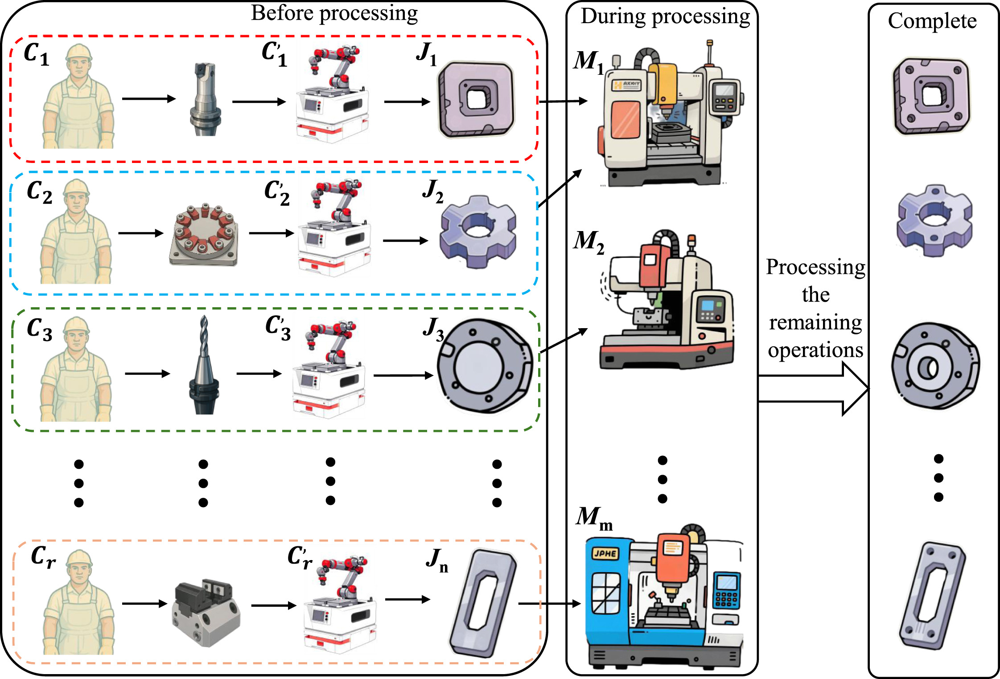
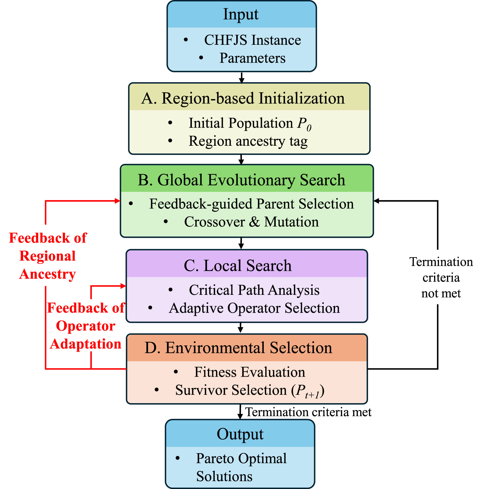
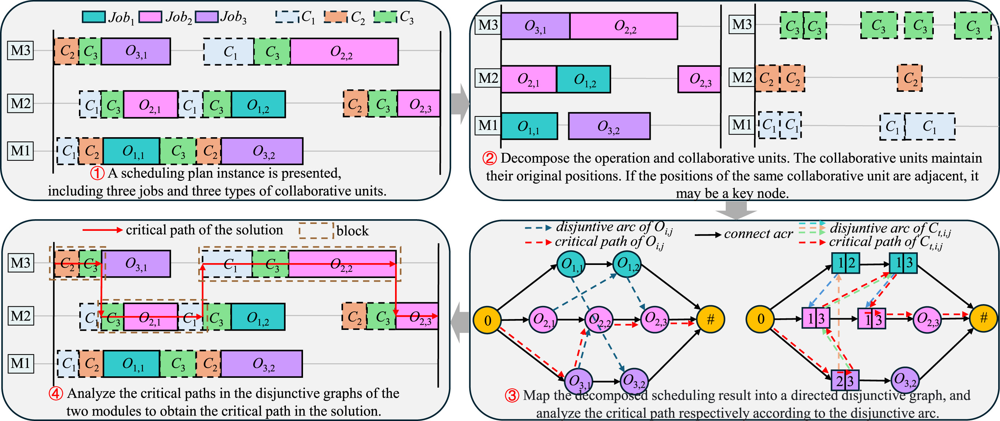
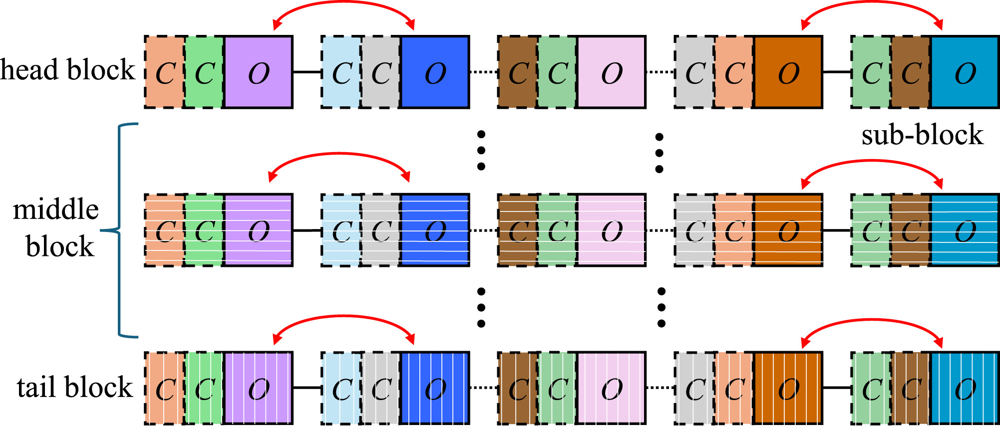

Offline RL for combinatorial decision-making
Learning scheduling policies from logged data without on-policy interaction — conservative value estimation, quantile-based uncertainty, and Actor–Critic training for OOD-robust dispatching.
M.Eng. Student, Mechanical Engineering · Beihang University
I'm an M.Eng. student in Mechanical Engineering at Beihang University (BUAA, 北航) — a Project 985 university in Beijing — graduating in June 2027. I'm advised by Prof. Maolin Cai and Prof. Xiaomeng Tong in the School of Automation Science and Electrical Engineering.
Before Beihang, I earned my B.Eng. in Electronic Information Engineering from the Civil Aviation University of China (CAUC), Tianjin (2020–2024), graduating ranked 1st in my department (1 / 375, GPA 89.58/100) and earning recommended postgraduate admission (保送) to Beihang. My graduate GPA is 90.31/100 (3.80 / 4.00), ranked 3 / 13 in my class.
My research centres on offline reinforcement learning, heterogeneous graph attention, and LLM-assisted algorithm design for human–machine collaborative flexible job-shop scheduling and intelligent manufacturing.
When I'm not working, I play basketball and am a keen photographer. I look forward to continuing toward a PhD after graduating in 2027.
Learning scheduling policies from logged data without on-policy interaction — conservative value estimation, quantile-based uncertainty, and Actor–Critic training for OOD-robust dispatching.
Treating jobs, machines, and workers as a typed graph; multi-attention extractors that capture process order, resource contention, and skill heterogeneity in a single representation.
Using multiple LLMs cooperatively to evolve modular components of memetic algorithms — encoding, decoding, operators, local search — guided by multimodal prompting and error-feedback repair.
Modeling and optimization of flexible job-shop scheduling with realistic features: worker-dependent setup times, parallel collaborative units, and energy-aware variable-speed machines.




Shiliang Shao
School of Automation Science and Electrical Engineering
Beihang University
37 Xueyuan Road, Haidian District
Beijing 100191, China